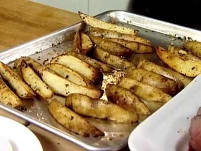

Nick's Cookbook
Nick's Cookbook
Roasted Whitefish with Vegetables
Step 3: Bake the potatoes for about 15 minutes or until they begin to brown and are almost cooked through.

Step 2
Step 4
Homepage
Seafood Entrees
Main page of Roasted Whitefish with Vegetables